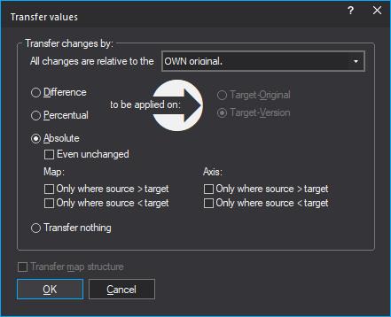

|
The dialog Transfer changes |

  
|
|
The dialog Transfer changes |
|

You can reach this dialog by connecting 2 projects and right-clicking a map or selection in a hexdump.
This dialog allows you to transfer the map you right-clicked into the other project. You can choose whether you want to transfer the contents (the map values) and / or the structure data (everything you see in the map properties). When transferring the map start address will be adjusted according to the current connection settings.
Basis of calculation:
This dialog is often used in combination with the function connect / reference version. For the consideration of what is 'changed 'or the calculation of percentage / relative, however, always the OWN original of the respective source / target project is used. The reference version is ignored here.
Absolute/Difference/Percent:
If you choose the mode "Absolute", the values will be transferred directory. For the mode "Difference" the difference between original and version will be calculated using the source data and added to the target data. For the mode "Percent" the percentage difference between original and version will be calculated for the source data and added as percentage to the target data.
Rights:
Some functions in this dialog can be locked if the rights of the source project (§ in the Project properties) don't allow them.
Problems?
If nothing appears to be transferred, check the selected mode. Also turn off the reference version for both projects. This is the only way to see the basis of the calculation.
Tip:
Hold the shift-key pressed to skip this dialog and perform the action immediately.
Shortcuts
Symbol bar: -
Tastatur: Ctrl+Alt+W / Ctrl+Alt+Shift+W (Transfer values)
Tastatur: Ctrl+Alt+T / Ctrl+Alt+Shift+T (Transfer maps)